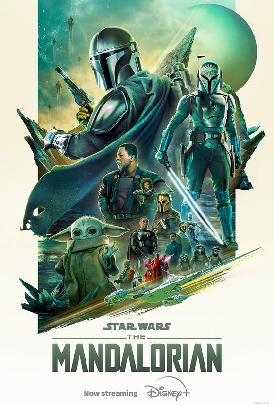

The Mandalorian

Summary
The Mandalorian is a space Western series set in the Star Wars universe, created by Jon Favreau. It follows the adventures of the Mandalorian bounty hunter Din Djarin and his encounters with various characters across the galaxy.
Cast
- Pedro Pascal as Din Djarin / The Mandalorian
- Gina Carano as Cara Dune
- Carl Weathers as Greef Karga
- Giancarlo Esposito as Moff Gideon
- Emily Swallow as The Armorer
Storyline
The series explores themes of honor, redemption, and the complexities of identity as The Mandalorian navigates through a dangerous galaxy while protecting a mysterious child known as "The Child" or "Grogu."
Episodes
- Season 1: 8 episodes
- Season 2: 8 episodes